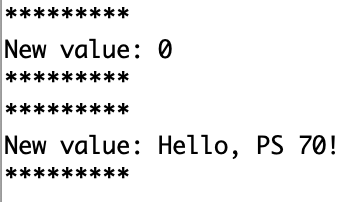

<div class="container-fluid">
<h1> Week 9: Radio, Wifi, Bluetooth (IoT) </h1>
Last updated: April 4, 2022
<h4> Cotrolling an LED with my iPad using Bluetooth Low Energy (BLE) </h4>
For this week's project, I sought to find a way to turn an LED on and off using an app on my iPad. We learned about the benefits of BLE during class—for example, BLE devices use far less energy than regular Bluetooth and have a longer battery life. <br>
I was struggling to connect with the LED, but did connect my iPad to the Huzzah through the BLE Scanner app and was able to get what I'd type into my iPad onto the Serial Monitor.
I used the BLE_Write Example in Arduino to get started. Here is the code for the example (Note: for the <code> &#35; include</code> lines, there are <>'s around <code> BLEDevice.h</code>, <code> BLEUtils.h</code>, and <code> BLEServer.h</code>. The website wouldn't show those properly on the website; I assume that's because the html thought those were a different command.):
<code>
<br>
/* <br>
Based on Neil Kolban example for IDF: https://github.com/nkolban/esp32-snippets/blob/master/cpp_utils/tests/BLE%20Tests/SampleWrite.cpp
Ported to Arduino ESP32 by Evandro Copercini <br>
*/ <br>
<br>
<!--
&#35; include <BLEDevice.h> <br>
&#35; include <BLEUtils.h> <br>
&#35; include <BLEServer.h> <br>
-->
&#35; include BLEDevice.h <br>
&#35; include BLEUtils.h <br>
&#35; include BLEServer.h <br>
<br>
// See the following for generating UUIDs: <br>
// https://www.uuidgenerator.net/ <br>
<br>
&#35; define SERVICE_UUID "4fafc201-1fb5-459e-8fcc-c5c9c331914b" <br>
&#35; define CHARACTERISTIC_UUID "beb5483e-36e1-4688-b7f5-ea07361b26a8" <br>
<br>
<br>
class MyCallbacks: public BLECharacteristicCallbacks { <br>
void onWrite(BLECharacteristic *pCharacteristic) { <br>
std::string value = pCharacteristic->getValue(); <br>
<br>
if (value.length() > 0) { <br>
Serial.println("*********"); <br>
Serial.print("New value: "); <br>
for (int i = 0; i < value.length(); i++) <br>
Serial.print(value[i]); <br>
<br>
Serial.println(); <br>
Serial.println("*********"); <br>
} <br>
} <br>
}; <br>
<br>
void setup() { <br>
Serial.begin(115200); <br>
<br>
Serial.println("1- Download and install an BLE scanner app in your phone"); <br>
Serial.println("2- Scan for BLE devices in the app"); <br>
Serial.println("3- Connect to MyESP32"); <br>
Serial.println("4- Go to CUSTOM CHARACTERISTIC in CUSTOM SERVICE and write something"); <br>
Serial.println("5- See the magic =)"); <br>
<br>
BLEDevice::init("Owen's ESP32"); <br>
BLEServer *pServer = BLEDevice::createServer(); <br>
<br>
BLEService *pService = pServer->createService(SERVICE_UUID); <br>
<br>
BLECharacteristic *pCharacteristic = pService->createCharacteristic( <br>
CHARACTERISTIC_UUID, <br>
BLECharacteristic::PROPERTY_READ | <br>
BLECharacteristic::PROPERTY_WRITE
); <br>
<br>
pCharacteristic->setCallbacks(new MyCallbacks()); <br>
<br>
pCharacteristic->setValue("Hello World"); <br>
pService->start(); <br>
<br>
BLEAdvertising *pAdvertising = pServer->getAdvertising(); <br>
pAdvertising->start(); <br>
} <br>
<br>
void loop() { <br>
// put your main code here, to run repeatedly: <br>
delay(2000); <br>
} </code> <br>
So, here is my understanding of this piece of code: <br>
<code>
if (value.length() > 0) { <br>
Serial.println("*********"); <br>
Serial.print("New value: "); <br>
for (int i = 0; i < value.length(); i++) <br>
Serial.print(value[i]); <br>
<br>
Serial.println(); <br>
Serial.println("*********");</code> <br>
The <code> if (value.length() > 0) {</code> says that if the serial monitor receives a value from the BLE connected device longer than 0, do the following: <br> Print the 9 asterisks, then "New value:", then that new value, then another 9 asterisks. I don't understand all of the code within that piece, but, essentially, that's what I presume must be going on given what shows up on the Serial Monitor. Here is an image from the serial monitor demonstrating what shows up. <br>

<h5> Breadboard setup </h5>
At first, I'd connected the Huzzah ESP32 to the breadboard and connected an LED, but when simply writing text from the iPad to the Serial Monitor, there is no breadboard needed. Simply connecting the Huzza to the computer will be fine. Here's a picture.
<img src="esp32_connection.png"
alt="Serial Monitor Output"
width="360" height="240"> <br>
Here's a video of the iPad "talking" to the Arduino! I tried to capture me typing and then the Serial Monitor. As you can see, I typed, "Hello!" and then "Hello!" showed up immediately on the Serial Monitor. I tried connecting the Huzzah to a breadboard and connecting an LED (and the LED would light up), but wasn't able to figure connect the LED to the BLE scanner on my iPad such that typing something would turn the LED on and something else would turn the LED off. <br>
I do think, though, that connecting the BLE scanner to the Huzzah was a great step and really neat to see. It's also cool that BLE seems to have so many advantages. I hadn't heard of it much before our class and it makes me wonder if there are other uses for BLE for things we typically use for Bluetooth.
<!--
<video width="720" height="480" controls>
<source src="initial_controlling_brightness.mov" type="video/mp4">
</video>
<img src="a_logo_metal.png"
alt="Arduino Example Setup"
width="720" height="480">
-->
<h4> Helpful Links </h4>
Gave me the code for "#" in html (&#35;): https://www.rapidtables.com/web/html/html-codes.html <br>
Helped me with the Bluetooth for the Huzzah: https://nathanmelenbrink.github.io/ps70/10_networking/huzzah3.html <br>
<h4> Final Notes </h4>
Thank you so much to the teaching staff for their help with this project! <br>